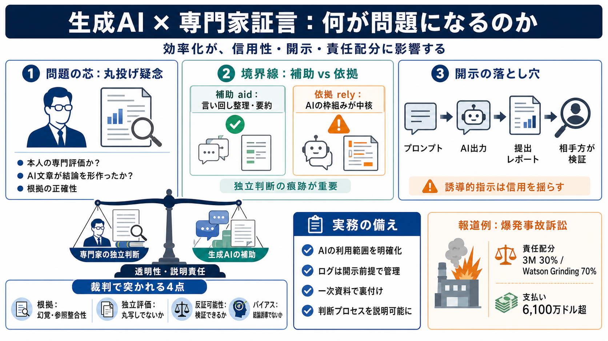

‘Show How 3M Is 0% at Fault:’ Expert Witness Used ChatGPT to Write Report Defending Company in Deadly Explosion Lawsuit
As part of the case, 3M hired a man named Josh Autenrieth of Knighthawk Engineering to prepare an “expert report” about …

As part of the case, 3M hired a man named Josh Autenrieth of Knighthawk Engineering to prepare an “expert report” about …
Rob KwokKwok Daniel LLP \ On November 6, 2025, a Harris County jury returned a second verdict this year in favor of 7 cl…
In court, attorneys for the plaintiffs focused on 3M, which was responsible for inspecting the gas detection system. The…
Jury awards Watson Grinding explosion survivors more than $61 million in latest verdict against 3M.
Houston Public Media ### August 12, 2026 broken clouds Donate to the Resiliency Fund Keep trusted news going strong. G…